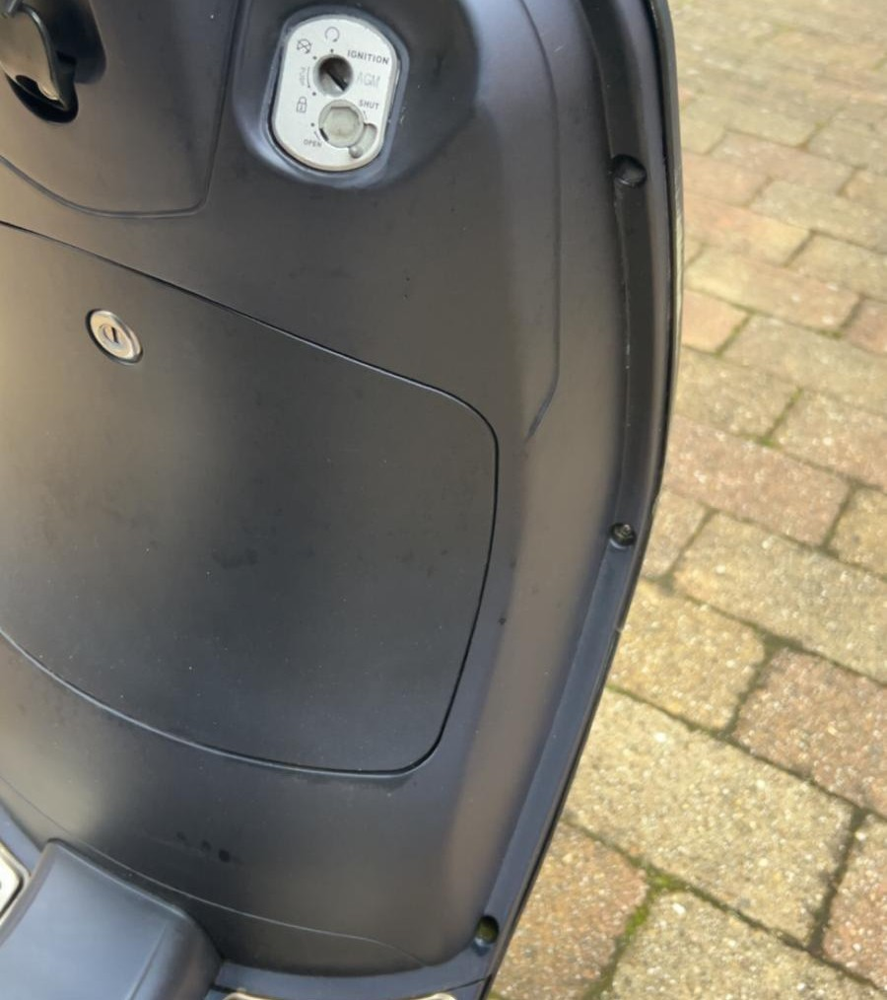
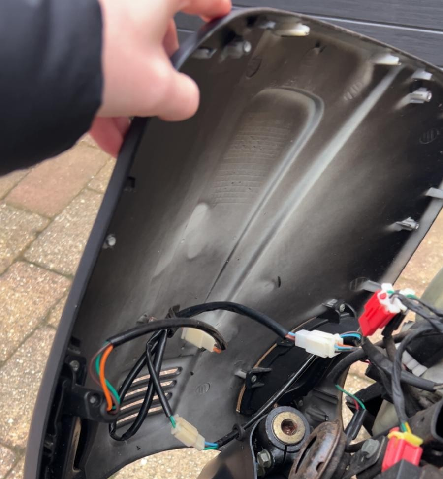

Voordat je begint met het vervangen van scooteronderdelen, is het belangrijk om goed voorbereid te zijn. Zorg ervoor dat je het juiste gereedschap bij de hand hebt, zoals schroevendraaiers, steeksleutels en een dopsleutelset. Controleer vooraf of je het juiste vervangende onderdeel hebt voor jouw AGM-scooter.
Zet je scooter op een vlakke, stabiele ondergrond en zorg voor voldoende werkruimte en verlichting. Leg alle benodigde onderdelen en gereedschappen klaar, zodat je tijdens het sleutelen niet hoeft te zoeken. Zo kun je overzichtelijk en veilig aan de slag!
Zorg vooraf voor het juiste gereedschap, zoals schroevendraaiers, inbussleutels en een dopsleutelset. Controleer of je het juiste vervangende onderdeel hebt en leg alles klaar voordat je begint.
Basisgereedschap
Gereedschap
Gebruik
Richtprijs
Schroevendraaierset
Schroeven van kappen
ca. € 10
Steeksleutelset
Bouten en moeren
ca. € 15
Dopsleutelset
Moeilijk bereikbare bouten
ca. € 20
Inbussleutelset
Inbusbouten
ca. € 8
Voorkap vervangen

Gaten van de kap schroeven
De voorkap bevindt zich aan de voorkant van de scooter, rondom de koplamp. Om deze te vervangen, moet je eerst de bevestigingsschroeven verwijderen. Let ook op eventuele kunststof klikverbindingen. Maak de kap voorzichtig los en controleer of er geen bedrading aan vastzit. Plaats vervolgens de nieuwe voorkap en bevestig deze op dezelfde manier.
De voorkap zit rondom de koplamp. Verwijder de schroeven en maak eventuele klikverbindingen voorzichtig los. Plaats daarna de nieuwe kap en bevestig deze.
Beenschild vervangen

De binnenkant van een kap
Het beenschild is het grote kunststof paneel aan de voorkant, tussen het stuur en de voetenruimte. Het beschermt verschillende onderdelen achter de buitenkant van de scooter. Bij het vervangen moeten de bevestigingspunten en omliggende panelen mogelijk eerst worden losgemaakt. Let erop dat je de kunststof bevestigingen niet beschadigt wanneer je het oude beenschild verwijdert.
Het beenschild is het grote paneel tussen het stuur en de voetenruimte. Maak de bevestigingen los en verwijder eventueel omliggende panelen. Plaats het nieuwe beenschild zonder de kunststof clips te beschadigen.
Zijpanelen vervangen
De zijpanelen bevinden zich aan beide zijkanten van de scooter. Ze zorgen voor de afwerking van het frame en beschermen verschillende onderdelen. Verwijder de schroeven en maak eventuele klikverbindingen voorzichtig los. Plaats het nieuwe zijpaneel en controleer of alle bevestigingspunten goed aansluiten.
De zijpanelen zitten aan beide kanten van de scooter. Verwijder de schroeven en klikverbindingen. Plaats de nieuwe panelen en controleer of ze goed aansluiten.